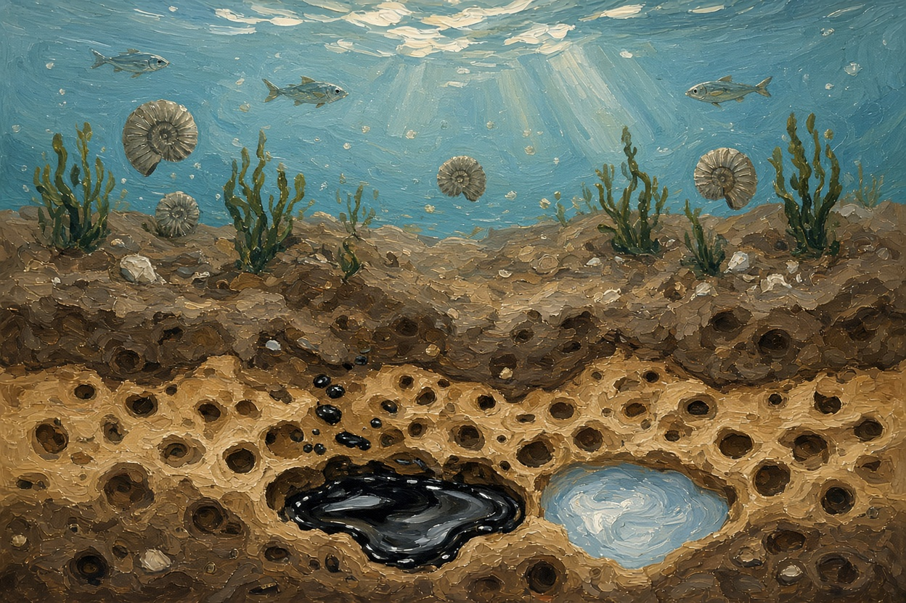

How oil forms How oil forms in nature איך נוצר הנפט כיצד נוצר הנפט בטבע
By the end of this page, say how oil forms. By the end of this page, explain how crude oil forms in the sea. בסוף העמוד תוכלו לומר איך נוצר הנפט. בסוף העמוד תוכלו להסביר כיצד נוצר הנפט הגולמי בים.
Oil formed in the sea, and it took a very long time. Sea animals that lived long ago died and sank to the bottom. Mud covered them. Air could not reach them, so they changed. After a very long time, heat and heavy pressure turned what was left of them into a thick black liquid. That liquid is crude oil. Crude oil formed in the sea over an enormous stretch of time. When creatures that lived in the sea long ago died, they sank to the sea floor. Year after year, mud piled on top of them. No air reached them, and they changed. After a very long time, high heat and great pressure turned those remains into a thick black liquid: crude oil. הנפט נוצר בים, וזה לקח המון זמן. יצורים שחיו בים לפני הרבה שנים מתו ושקעו לקרקעית. בוץ כיסה אותם. אוויר לא הגיע אליהם, והם השתנו. אחרי המון שנים, חום ולחץ חזק הפכו את מה שנשאר מהם לנוזל שחור וסמיך. זה הנפט הגולמי. הנפט הגולמי נוצר בים במשך זמן ארוך מאוד. יצורים שחיו בים לפני שנים רבות מתו ושקעו אל קרקעית הים. במשך השנים נערם עליהם בוץ רב. אוויר לא הגיע אליהם, והם השתנו. כעבור זמן רב מאוד, חום גבוה ולחץ כבד הפכו את השרידים לנוזל שחור וסמיך: הנפט הגולמי.
The oil slipped between the rocks and soaked into rocks that are full of tiny holes. That is where people find it today. Natural cooking gas formed together with the oil. People usually find the gas and the oil in the same place. The oil seeped through the rocks and soaked into porous rock, rock full of tiny holes. That is where it is found today. Natural cooking gas formed along with the oil, and the two are usually found together. הנפט חלחל בין הסלעים ונספג בסלעים שיש בהם חורים קטנים. שם מוצאים אותו היום. יחד עם הנפט נוצר גם גז בישול מן הטבע. לרוב מוצאים את שניהם באותו מקום. הנפט חילחל בין הסלעים ונספג בסלעים נקבוביים, סלעים מלאים חורים זעירים. שם מוצאים אותו בימינו. עם הנפט נוצר גם גז בישול מן הטבע, ובדרך כלל מוצאים את השניים יחד.
People do not burn crude oil just as it comes from the ground. It is a mix of many things. The important ones are gasoline, kerosene, diesel, cooking gas, and thick fuel oil. People knew about crude oil long ago, but they started to use it for light only after they learned to take the kerosene out of it. Later they learned to separate the other parts too. Those parts run machines and cars, give heat and light, and help make electricity. Crude oil is not used in the form found in nature. It is a mixture of many materials. The most important are gasoline, kerosene, diesel, cooking gas, and heavy fuel oil. People knew crude oil in ancient times, yet they began to use it for lighting only after they could separate the kerosene and burn it in a lamp. Later they learned to separate the other materials as well, and used them to run machines and cars, to heat, to give light, and to produce electricity. לא משתמשים בנפט הגולמי כמו שהוא יוצא מהאדמה. הוא תערובת של הרבה חומרים. החשובים שבהם הם בנזין, קרוסין, סולר, גז בישול ומזוט. אנשים הכירו את הנפט הגולמי כבר מזמן, אבל התחילו להאיר בו רק אחרי שלמדו להוציא ממנו את הקרוסין. אחר כך למדו להפריד גם את שאר החומרים. בהם מניעים מכונות ומכוניות, מחממים, מאירים ומפיקים חשמל. אין משתמשים בנפט הגולמי בצורה שבה מוצאים אותו בטבע. הוא תערובת של חומרים רבים, והחשובים שבהם הם בנזין, קרוסין, סולר, גז בישול ומזוט. הנפט הגולמי היה מוכר כבר בימים קדומים, אבל רק אחרי שלמדו להפריד ממנו קרוסין התחילו להאיר בעזרתו במנורה. מאוחר יותר הפרידו גם את שאר החומרים, והשתמשו בהם כדי להניע מכונות ומכוניות, לחמם, להאיר ולהפיק חשמל.
Life would be much less comfortable without oil. Crude oil is so important that people call it a real treasure, and also black gold. Some countries have even fought so they could control the places where oil is found. Life would be far less comfortable without oil. Crude oil matters so much that people count it as a true treasure, and they also call it black gold. Some nations have even gone to war to take control of the places where oil is found. בלי נפט החיים היו הרבה פחות נוחים. הנפט הגולמי כל כך חשוב, עד שקוראים לו אוצר, וגם זהב שחור. יש עמים שאפילו נלחמו כדי לשלוט במקומות שבהם יש נפט. בלי נפט היו חיינו נוחים הרבה פחות. הנפט הגולמי חשוב כל כך, עד שהוא נחשב לאוצר של ממש, וקוראים לו גם הזהב השחור. יש עמים שהיו מוכנים אף לצאת למלחמה כדי לשלוט במקורות הנפט.
Like coal, oil is a treasure of nature that will run out one day. New oil takes a very long time to form. So it is important not to waste oil. It is also important to look for new kinds of energy, for heat, for electricity, and for running machines. Like coal, oil is a natural treasure that will be used up one day, and a great many years must pass before new oil can form. That is why it is important not to waste oil. It is just as important to search for new sources of energy for heating, for making electricity, and for running machines. כמו הפחם, גם הנפט הוא אוצר של הטבע שייגמר ביום מן הימים. נפט חדש נוצר רק אחרי המון שנים. לכן חשוב לא לבזבז נפט. חשוב גם לחפש דרכים חדשות להשיג אנרגיה לחימום, לחשמל ולהנעת מכונות. כמו הפחם, הנפט הוא אוצר טבע שייגמר ביום מן הימים, ויעברו שנים רבות מאוד עד שיווצר נפט חדש. לכן חשוב לא לבזבז את הנפט. חשוב גם לחפש מקורות אנרגיה חדשים לחימום, להפקת חשמל ולהנעת מכונות.
